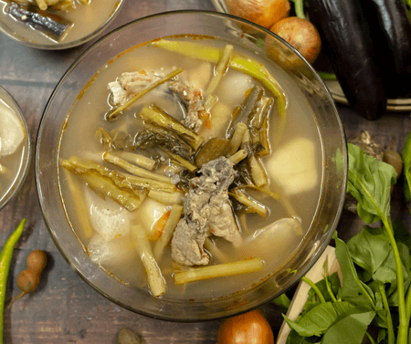

Sinigang Recipe (Sour Soup)

This is the ultimate comfort food especially in rainy season in Philippines. You can make it with pork, beef, fish and shrimp.
Ingredients
- 2 pound pork
- 1 bunch bokchoy
- 6 pieces string beans
- 1 piece radish
- 1 onion, sliced
- 2 pieces tomato quartered
- 2 pieces chili
- 2 quarts water
- 3 pieces taro gabi
- 1 pack sinigang mix
- salt and pepper to taste
Instructions
- Heat oil in a large pot over medium heat. Saute onion and tomatoes.
- Add pork until light brown.
- Pour the water and bring to a boil.
- Add taro and radish then simmer for 40 minutes or until pork is tender.
- Add sinigang mix and chilli. Add the string beans and simmer for 5 minutes.
- Add bokchoy. Serve hot.